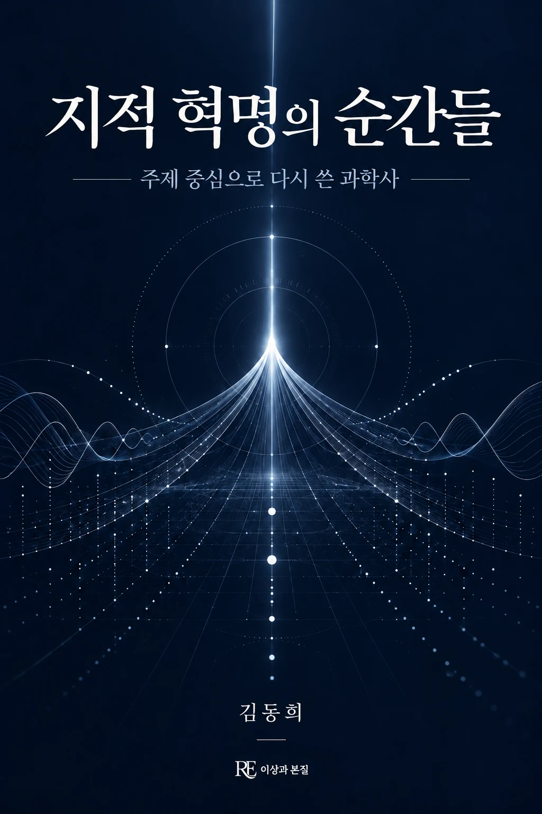

연대순으로 나열된 과학사 대신, 관찰과 실재·통합과 보존·파동과 입자·화살과 흐름이라는 네 개의 물음으로 다시 엮은 32장의 결정적 순간들. 망원경에서 블랙홀까지, 인간의 시선이 어떻게 세계를 다시 그려왔는지를 따라간다.
기획 의도
이 책은 과학사를 인물과 연대순으로 나열하지 않습니다. 대신 관찰과 실재, 통합과 보존, 파동과 입자, 화살과 흐름이라는 네 가지 물음을 축으로 삼아 물리학의 결정적 순간들을 다시 배열합니다. 같은 인물이 여러 부에 걸쳐 다른 얼굴로 등장하는 것도 이 때문입니다 — 뉴턴은 통합의 설계자이면서 동시에 빛을 알갱이로 고집한 사람이기도 합니다. 사건의 순서보다 인간의 시선이 넓어지고 깊어져 온 과정 자체를 보여주는 것이 이 책의 목표입니다.
예상 독자
과학사를 연대기가 아니라 개념과 물음의 흐름으로 이해하고 싶은 독자, 물리학의 핵심 발견들을 교과서식 나열이 아니라 하나의 이야기로 다시 만나고 싶은 교양 독자.
목차
프롤로그 · 우리가 보는 세상은 진실인가, 환상인가
1부. 관찰과 실재 — 눈에 보이는 것 너머를 여는 열쇠
- 1장 가시광선의 한계를 넘다 — 망원경과 현미경이 열어젖힌 두 개의 무한
- 2장 정밀 측정이 원을 깨뜨리다 — 티코 브라헤의 관측과 케플러의 타원
- 3장 금성의 위상이 던진 파문 — 관찰 하나가 체계를 무너뜨리는 방식
- 4장 아무것도 발견하지 못한 실험 — 마이컬슨과 몰리, 그리고 사라진 에테르
- 5장 측정이라는 개입 — 보는 행위가 대상을 바꿀 때
- 6장 보이지 않는 빛 — 허셜의 온도계가 스펙트럼 바깥에서 읽은 것
- 7장 별빛의 자를 만든 사람 — 리비트의 주기·광도 관계와 우주의 거리
- 8장 138억 년 전의 잡음 — 우주배경복사를 관찰한다는 것의 의미
2부. 통합과 보존 — 달라 보이는 것들을 하나의 수식으로
- 9장 지상의 사과와 천상의 달 — 뉴턴의 만유인력과 보편 법칙의 탄생
- 10장 전기와 자기가 하나가 되다 — 패러데이의 직관과 맥스웰의 방정식
- 11장 질량과 에너지의 동등성 — E=mc²이 이어 붙인 두 세계
- 12장 자연은 게으르다 — 페르마의 최단 시간 원리와 최적화의 미학
- 13장 대칭이 있는 곳에 보존이 있다 — 에미 뇌터의 정리
- 14장 열과 운동의 통합 — 통계물리학이 이은 미시와 거시
- 15장 시공간의 융합 — 4차원이라는 직물, 그리고 1919년에 휘어진 별빛
- 16장 아직 오지 않은 통합 — 네 가지 힘을 하나로 묶으려는 시도
3부. 파동과 입자 — 물질과 존재의 근원을 묻다
- 17장 빛을 둘러싼 첫 대결 — 뉴턴의 입자와 하위헌스의 파동
- 18장 이중 슬릿의 충격 — 회절과 간섭이 보여준 것
- 19장 광전효과 — 빛을 알갱이로 본 아인슈타인의 시선
- 20장 모든 물질은 파동이다 — 드브로이의 대담한 제안
- 21장 원자 모형의 진화 — 궤도를 도는 위성에서 확률의 구름으로
- 22장 파동함수와 불확정성 — 슈뢰딩거 방정식이 말하는 존재의 확률
- 23장 양자 얽힘 — 멀리 떨어져도 이어지는 상관관계
- 24장 대칭이 부서지며 질량이 생기다 — 표준모형과 힉스 장
4부. 화살과 흐름 — 시간, 엔트로피, 그리고 정보
- 25장 되돌릴 수 없는 것 — 열역학 제2법칙과 시간의 화살
- 26장 세계를 비트로 다시 쓰다 — 튜링과 섀넌, 실체가 된 정보
- 27장 팽창하는 우주 — 정적 우주관을 무너뜨린 허블의 관측
- 28장 별의 일생 — 붉은 거성에서 블랙홀까지, 물질의 순환
- 29장 사건 지평선 너머 — 정보는 블랙홀 속에서 사라지는가
- 30장 무질서에서 솟는 질서 — 상전이, 창발, 그리고 자발적 대칭 깨짐
- 31장 생명이라는 특이점 — 엔트로피를 거스르는 것처럼 보이는 현상
- 32장 변하지 않는 수식을 찾아서 — 현대 물리학과 플라톤적 본질
에필로그 · 질문은 끝나지 않는다 — 도구와 시선이 만드는 다음 도약
도서목록으로 돌아가기